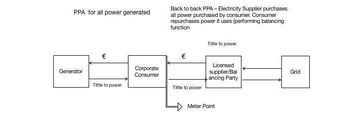

Chapter5 Energy Contracts
5.1 Basic Concepts
When dealing with Energy Services, some of the main challenges are:
Challenges in energy efficiency - Most organizations (building owners) don´t have the initial capital upfront to invest in Energy Efficiency measures;
No capital for investment - Banks are not specialized in this type of investment or, able to make an offer alone;
Difficulty to get bank loans - It´s a regulated market with technical certification needed, so out of scope of the usual business of usual lenders;
Technical complexity - Technical and complex deal structure, with several entities; and
No standard contracts - The insistence of a real standard Contract across countries or even within the same jurisdiction.
Most contracts are designed to answer a specific need or problem.
When we refer to a contract, on a very simples terms we mean:
An agreement with specific terms between two or more persons or entities in which there is a promise to do something in return for a valuable benefit (or consideration, in common law)

The existence of a contract requires finding the following factual elements:
an offer;
an acceptance of that offer which results in a meeting of the minds (also referred as “the mirror image rule”);
a promise to perform;
a valuable consideration (which can be a promise or payment in some form);
a time or event when performance must be made (or also refereed as meet commitments);
the terms and conditions for performance, including fulfilling promises;
performance, and
an intention to effect legal obligations (so we are excluding what doctrine refers as “not a serious proposal” too)
Depending on how the deal is structured, performance and its payment can be designed differently. Usually are dragged along the whole term of the contract (not a single performance and payment), namely if there are several installments instead of a single payment or, it´s a recurrent service.
5.1.0.1 Contract elements
Performance and Payment
Exhange (product /service) for a
Price
Terms and conditions
 The total energy used (not useful) can be expressed as how we use energy services, or secondary conversation that concerts to heating, ventilation, lighting and so on.
The total energy used (not useful) can be expressed as how we use energy services, or secondary conversation that concerts to heating, ventilation, lighting and so on.
Bear in mind, that energy supply and energy performance are not equivalents. Contracting a certain amount of energy and an end use are not equals. Besides losses with secondary conversion, the first is related to a commodity (or raw material you buy to generated a certain output), the last to the end result.
The same amount of energy may give the same thermal comfort, or not, for example.
Energy contracts
Energy Supply Contracts
Energy Services Agreement (ESAs)
Power Purchase Agreements (PPAs)
Energy Performance Contracts (EPCs)
Energy Management Contracts (EMCs)
Finally, to have a Contract you need, at least two persons or entities.
The Energy Efficiency Directive (EED) defines an ‘energy service provider’ as a “natural or legal person who delivers energy services or other energy efficiency improvement measures in a final customer’s facility or premises”.
They can be (alone or jointly):
Utilities;
Equipment manufacture/supplier;
Supplier Manufacturer of building automation and control systems
Facility management and operation company
Consulting/engineering firm
Independent specialist (focused on Energy efficiency services);
Energy Data Companies;
Governmental entities (namely under subsidized schemes)
Banks and other Financial institutions (as intermediaries for EE related type of investments) and
Others.
In a raw sense, you should understand that entity will not define the contract, meaning that a EPC will be a EPC, regardless if is specially used by one type of Entity (typical example of EE contracts with the Public Sector). Also, you can have a variety of entities so understanding the responsibility, strengths and weaknesses and governance among them is an import matter.
The Energy Efficiency Directive (EED) defines an ‘energy service provider’ as a “natural or legal person who delivers energy services or other energy efficiency improvement measures in a final customer’s facility or premises”.
5.1.0.2 nontechnical guide to breakdown a basic contract structure
5.2 Energy Services Contracts
An Energy Service Agreement or Contract it´s use with a large range of scopes.
As it is defined by Lay and Sorrell, Energy service contracts have been variously defined and categorized in relation to the nature of the energy services covered such as:
the source of finance for new investment;
the ownership of the relevant assets;
the provision of guarantees for savings in energy; consumption and/or costs and;
the degree to which control of energy services together with the associated risks is transferred to the contractor.
Various definitions of energy service contracting have been proposed, but few satisfactorily describe the diversity of contractual arrangements that are available or the range of activities involved.
There is little consensus on which combination of these distinguishes energy service contracts from more conventional (namely under one single market supplier, or a monopoly) or market relationships (as energy/fuel supply Contracts under liberalized market).
Terminology use varies from one country to another, reflecting Financial and Fiscal schemes which aim to promote EE measures and, as a result the types of contract change in line with those policies.
There are several configurations of energy services contracts, most specific to each country.
To name a few, so you can analyze the range of contractual terms that can be under the “energy service Contract”´ terminology.
“Delivery Contracting” - also known as Supply Contracting or Energy Supply Contracting (ESC) - is focused on the supply of a set of energy services (such as heating, lighting, motive power, etc.) mainly via outsourcing the energy supply.
Chauffage, one of the most common contract types in Europe besides EPC, is a form of Delivery Contracting. In a chauffage arrangement the fee for the services is normally calculated based on the client’s existing energy bill minus a certain level of (monetary) savings, with a guarantee of the service provided. Alternatively, the customer may pay a rate, for instance, per square meter. The ESCO (or ESPC) may also take over the purchase of fuel and electricity.
A Contract Energy Management (CEM), which means “the managing of some aspects of a client’s energy use under a contract that transfers some of the risk from the client to the contractor (usually based on providing agreed ‘service’ levels)”
“comfort contracting” In the Nordic countries/Scandinavia, contracts similar to Delivery Contracting are referred to as “comfort contracting”, and in these contracts the provision of the level of comfort or level of service is outsourced to the ESCO firm. These contracts will go beyond the provision of energy for the level of comfort, and take care of full maintenance, including a healthy indoor environment, aesthetics, etc.
“heat supply contracts” In Italy, “chauffage”, or “heat supply contracts” (“Servizio Calore”, in Italian). These are however substituted by the stricter “Energy Service Plus contracts” (“servizio energia plus”), which also includes a commitment by the provider to reduce the consumption of primary energy for winter heating by at least 10% with respect to what is indicated in the building certificate. Furthermore, it commits to the installation of a temperature control system, when possible.
A BOOT model involves an ESCO designing, building, financing, owning and operating the equipment for a defined period of time and then transferring this ownership across to the client. This model resembles a special purpose enterprise created for a particular project. Clients enter into long term supply contracts with the BOOT operator and are charged accordingly for the service delivered; the service charge includes capital and operating cost recovery and project profit.
Integrated Energy Contracting (IEC) is a new model, which combines “Engineering, Procurement, and Construction” (EPC) Contract and Delivery Contracting and thus increase the amount of energy cost savings. When designing the project, demand side measures are planned as a priority, and the remaining level of energy needs are covered by more energy efficient supply, when possible. Therefore an IEC combines the benefits of the demand and supply side measures, there forereaching a higher cost-benefit. At the same time, the contract is simpler than a normal EPC, which also reduces expense.
Utility energy service Contracts (UESC) were initially Authorized by the Energy Policy Act. A utility energy service contract (UESC) is a limited-source contract between a federal agency and its serving utility for energy- and water-efficiency improvements and demand-reduction services.
Energy Savings Performance Contracts (ESPCs), also known as Energy Performance Contracts (EPC), originally from the US, are an alternative financing mechanism designed to accelerate investment in cost effective energy conservation measures in existing Federal buildings. The Energy Policy Act of 1992 (EPACT 1992) authorized Federal agencies to use private sector financing to implement energy conservation methods and energy efficiency technologies. An ESPC is a partnership between a Federal agency and an energy service company (ESCO). The ESCO conducts a comprehensive energy audit for the Federal facility and identifies improvements to save energy. In consultation with the Federal agency, the ESCO designs and constructs a project that meets the agency’s needs and arranges the necessary financing. The ESCO guarantees that the improvements will generate energy cost savings sufficient to pay for the project over the term of the contract. After the contract ends, all additional cost savings accrue to the agency.
The Energy Services Agreement services offer may be, alone or as a combination of:
Energy analysis and audits;
Project identification and appraisal;
Project design and implementation
Energy management
Property/facility management
Monitoring and evaluation of savings
Maintenance and operation
Equipment supply
Provision of services (space heating/cooling, lighting, etc.).
Fuel or electricity supply
Project financing and
Others.
Depending on the final setup, the contractual terms offered may be presented as:
Project financing;
Delivery contracting;
BOOT (Building-Own-Operate-Transfer);
Guarantee of performance;
Shared savings (EPC) or
Guaranteed savings (EPC)
Insurance coverage (insurance policy against events that can imply financial penalties for the ESCO) and
Others.
You can think as set of services, products, including construction being provided by one of more entities under a certain contractual arrangement. This combination depends on your needs, your present and future resources, as income and the final agreed structure.
We are going to cover some of the most relevant issues covered by the terms of an energy service contract.
Remember that most of the times are contracts with a long period of time, so its term may be subjects to several changes or events during the period of the contract.
When we refer to new equipment (for example, new heating or cooling system, PV system) that needs to be installed you should be aware of:
Specification, selection, cost, responsibility for installation and commissioning
Depending on the terms offered, this equipment can be owned by the beneficiary of such EE measures or not.
When referring “Equipment ownership” and along with it comes the definition of: rights during and after contract, buyback provisions
As an example, you need a car to get to work. You either decide to buy one. If you don´t have enough capital to pay upfront, you can either ask for a loan (but the car it´s yours, so as the risk) or, you can do a leasing contract, where you can use the car, but the ownership of the car remains in the leasing company. In the end of the leasing Contract you can buy the car for a residual price or not.
Maintenance, means who is accountable for monitoring and maintenance a certain equipment, if it’s a shared responsibility of not. You may have two sets of maintenance duties: preventive and corrective.
Operation, or who is responsible for operating or how coordination is defined
Performance and quality standards - May range from pressure and temperature in the case of steam supply to complex mix of comfort standards in the case of building energy services (e.g. temperature, lighting levels, air exchange, user control)
Reliability standards - Maximum downtime, provisions for immediate and backup service in the event of malfunction
Service standards - Acceptable parameters for temperature, lighting, air exchange and other factors
Monitoring and verification - Methods for monitoring and verifying energy provision, consumption and savings, including the use of standardised protocols
Calculation of cost savings - Baseline energy consumption and operating conditions, assumptions, formulas, adjustment protocols
Pricing and payment provisions - Fixed and variable components of pricing, guarantees to client, division of savings
Adjustment to external changes - Adjustment to inflation, changes in energy prices and other factors
Provisions for early termination - Buyout provisions, compensation, equipment removal provisions, restoration of facility
Other - Insurance, dispute resolution, penalties for contract breach, force majeure, etc.
As you already may notice, monitoring plays a central role in a energy service Contract, besides a typical issues related to equipment installation, bear in mind that the premise to install new equipment relies on the promise of future savings.
Usually, most disputes are related to the fulfillment , or not, that a certain service, was executed in accordance with the agreed terms, or usually disputes emerge on clauses related to how payments and saving are calculated, if a certain services was provided within a certain quality standard, if something needs to be repaired or replaced, who has the duty to repaid, replace (and pay).. and so on.
5.3 EPC
An “‘energy performance contracting’ means a contractual arrangement between the beneficiary and the provider of an energy efficiency improvement measure, verified and monitored during the whole term of the contract, where investments (work, supply or service) in that measure are paid for in relation to a contractually agreed level of energy efficiency improvement or other agreed energy performance criterion, such as financial savings;”

The EPC proposal can be designed as follows:
Baseline Energy Costs its done to access investment need to implement EE measures.
After implementation of such measure the the company will pay less energy cost, but has to pay back the ESE company pack, at least until refunded the initial investment;
Depending on the terms, this savings may be guaranteed or shared;
After the term of the contract the company will still benefit of such measures, but will save the whole saved energy costs.
So when looking to the Contract Lifecycle, starting from left to right:
There is an initial assessment or audit; then
A proposal with the Energy Efficiency Measures, Savings and General terms;
An acceptance of such offer; (or not, and goes back to proposal until you are satisfied with an offer); then the
Investment and Implementation and lastly;
Operation and Maintenance of the Energy Efficiency measures.
One of the most important features, when analyzing such proposals is to understand if it is:
Is a Guarantee performance or best efforts to get a certain performance?
The first, guarantees, the last just makes a promise to make the best efforts. It may sound like the same things, but is not. The promise on the first carries more certainty and commitment
Depending on the contractual terms it may have:
- Shared Savings and the risk and benefit of such saving is spit among the parties,
Assessment or results (or Monitoring and verification) plays a central role in this type of contract, because completion and fulfillment of a certain performance relies on Monitoring and verification.
Industry uses international standards to define what “Guarantee of energy efficiency improvement” is.
In the EN 15900:2010 define as ”commitment of the service provider to achieve a quantified energy efficiency improvement”.
The European standard EN 15900:2010 defines energy efficiency services (EES) as an agreed task or tasks designed to lead to an energy efficiency improvement and other agreed performance criteria.
According to EN 15900:2010 EES shall include an energy audit (identification and selection of actions) as well as the implementation of actions and the measurement and verification of energy savings. A documented description of the proposed or agreed framework for the actions and the follow-up procedure shall be provided. The improvement of energy efficiency shall be measured and verified over a contractually defined period of time through contractually agreed methods. A core element of each EES is thus an energy efficiency improvement (EEI) action, which is any action that directly leads to a reduction in energy consumption. EEI actions may be the substitution of technology, improvement of technology, better use of technology, and behavioural change.
Like most of the Typical Energy services Contracts, the Terms and Conditions of a EPC are quite similar.
An EPC usually carries:
- Investment (also referred as CAPEX) + O&M (usually there is some bundling, depending on the amortization of the CAPEX during O&M);
Or you can thing a typical Engineering and construction Contract with a Services Contract to perform O&M
Regarding the overall EPC (you should be aware of whom is carrying the risk, usually falls into who has the ownership of such investment);
Are usually defined as well:
Guaranties and Maintenance (i.e if are included or not, etc);
Savings (results or best efforts?) - saving: kWh or final bill or, combination of those?
Verification and Audits (initial assessment and during the contract);
Payments (how there are calculated, due dates, etc);
Provisions and scenarios that should be considered when designing the EPC ( or does the national legal system has a solution to these and/or some provisions should be added to the agreement) like:
Changes (from initial assessment), of energy source, supplier, etc;
Price change (namely under liberalized market) and dynamic pricing (it can also be a form of savings, namely financial ones)
Base scenario change: i.e machinery, higher consumption. (long duration (due to a big payback time, around 5-8 years, you may want to considerer);
Change of ownership (in Portugal, this type may be obligations “propter rem”, meaning that they are attached to the asset, not the person. If someone sells the asset, for example a house, the debts may stay with it (for example due condominium bills..);
Change of circumstances (usually there is some price increase, annually, according to some Price Index, still if i.e. electricity prices increase more than what could be expected, depending on jurisdiction parties may have to right to change pricing (i.e for consumer, the supplier may have a right to unilaterally change pricing but has to give the right to step out too. This could impact the savings´ calculation or other terms that use this variable;
Inclusions and exclusions (as. maximum number of support hours, replacements (for example, something is damaged and needs replacement);
Integration with different suppliers (i.e gas and electricity);
Authorizations (passive or active management) – that could be in a form of a mandate to act in behalf of the final client, for example to negotiate energy supply contracts)
Controls and minimum services (what are the minimum services, for example in case of interruption of services (not related to energy supply), time to reestablish services, penalties, etc);
Breach of contract (remedies)
Early Termination (of the contract)
Other duties: as confidentially (may follow into “sensitive data” category, if you are dealing with households and using consumption profiles, you also have to be aware of that historical data of end users, has special duties and obligations)
You also have the typical Events of Default, similar to any energy service contract such as:
Typical Events of Default:
Failure to make payments;
Failure to maintain credit support;
Breach of reps and warranties (usually subject to materiality);
Breach of transfer/change of control restrictions;
Other material breaches of obligations;
Where there are Notices and opportunity to cure remediable breaches and Typical remedies can range from :
Actual damages, subject to mitigation and capped
Termination
Termination payment
Step-In-Rights for lenders in case of a default event
5.4 PPA´s
A power purchase agreement (PPA), or electricity power agreement, is a contract between two parties, one which generates electricity (the seller) and one which is looking to purchase electricity (the buyer). The PPA defines all of the commercial terms for the sale of electricity - it can be fixed, indexed or “shaped”- between the two parties, including when the project will begin commercial operation, schedule for delivery of electricity, penalties for under delivery, payment terms, and termination. A PPA is the principal agreement that defines the revenue and credit quality of a generating project and is thus a key instrument of project finance.
This differs from the traditional approach of simply buying electricity from licensed electricity suppliers, often known as utility (or wholesale) PPAs. PPA also are a way of choosing a certain type of energy, the most common example, if a company wants to achieved a certain percentage of renewables (or decrease its carbon footprint) to either improve overall rating of its assets (from real estate to overall company), doing a PPA with solar or wind farm is a way to achieve that goal.
There are several Business Models Involving PPAs We can have:
On-site sale
Direct sale to customer on site (shopping centres, commercial centres, manufacturing industry, airports, ports etc.)
Saves costs related to the use of the transmission grid (transmission, distribution, dispatching, general costs of system)
Sale through the grid
Utility scale ground-mounted plants;
Sale to energy utilities (peak load purchases, renewable energy source obligations);
Sale to end users (large industrial clients);
Sale to wholesalers or “aggregators”;
There are several Power Purchase Agreement structures, namely:
Onsite direct wire PPA
Sleeved off-site PPA
Synthetic PPA
Mini-utility
Wholesale PPA
Wholesale PPA 
The most simple PPA is the “Wholesale model”, where the generator sells all power supplier back to the grid. Most of the RES where implemented using this structure, where licenses where auctioned to generate a certain amount of energy in an exchange for a certain predefined tariff per MWh.
Onsite direct wire PPA  Not all PPA are wholesale PPA´s and increasingly we see more often onsite private wire PPA´s. Instead of selling all back to the grid, namely activities that are energy intensive, as running servers of a company, or, they want to improve the % of RES in their overall energy mix, they can have power directly from generator to them and, a separate PPA, for either the excess power produced or as a last resort supplier.
Not all PPA are wholesale PPA´s and increasingly we see more often onsite private wire PPA´s. Instead of selling all back to the grid, namely activities that are energy intensive, as running servers of a company, or, they want to improve the % of RES in their overall energy mix, they can have power directly from generator to them and, a separate PPA, for either the excess power produced or as a last resort supplier.
Sleeved off-site PPA 
In a Sleeved PPA, all power generated is sold by the corporate consumer to the licensed supplier – or balancing party – still is a Back to back PPA – Electricity Supplier purchases all power purchased by consumer. Consumer repurchases power it uses (performing balancing function).
Synthetic PPA  A Synthetic PPA or, also referred as a “Virtual PPA” is a Contract (e.g. hedge or Contract for Difference) where Generator receives market price under PPA and Generator and Consumer settle difference between market price and fixed price. Its virtual, because there is no physical purchased of electricity, like most Contract for Difference. If you already looked to commodities trading (as brent, for example), you you see that most have “financial liquidation and not physical liquidation.
A Synthetic PPA or, also referred as a “Virtual PPA” is a Contract (e.g. hedge or Contract for Difference) where Generator receives market price under PPA and Generator and Consumer settle difference between market price and fixed price. Its virtual, because there is no physical purchased of electricity, like most Contract for Difference. If you already looked to commodities trading (as brent, for example), you you see that most have “financial liquidation and not physical liquidation.
Mini-utility 
Lastly, a mini utility PPA – Consumer purchases power it uses from Licensed Supplier. Licensed Supplier performs balancing Function too.
5.4.1 Curtailments
There are what so called Default provisions related to Curtailments
Illustration of wind/solar peaks and the curtailment pontencial 
On the Buyer-Directed Curtailment: * Buyer may have the right to direct Seller to decrease or stop deliveries * Generally for economic reasons * Seller should be compensated * Make sure the Project is capable of complying
Third-Party Curtailment: * Interconnecting Utility or Transmission Provider * Broad curtailment rights in Interconnection Agreement – e.g. emergency, reliability, system maintenance * Frequency may depend on level of transmission service * Seller may or may not be compensated
Curtailments can be Compensated or not, where:
On the Compensated Curtailments:
- Contract Price for each MWh Seller could have delivered
- Plus, if applicable, value of lost benefits, grossed up for taxes
Or Non-Compensated Curtailments: * Big negotiation point and financing issue * Seller wants to maximize ability to get compensated – argument is that anything affecting transmission beyond the the Point of Delivery (POD) is Buyer’s risk * Generally no compensation for an “Emergency” – Buyer treats this like a force majeure; definition is important * Generally no compensation if curtailment results from Seller’s failure to maintain required permits or interconnection facilities at or prior to the Point of Delivery (POD) * Mechanics depend on market rules and Project specifics * Be careful if Buyer is also the Transmission Provider or Interconnecting Utility
5.5 Energy Management Contracts (EMC)
Active and Passive Management
Definition of mandate contract
- With representation
- Without representation
Types: * ‘contracts of mandate’; * contracts to perform a specified task or work; and * ‘contracts of management’.
A classic contract of mandate does not concern the performance of work but the performance of an action for the benefit of someone else. In practice, contracts of mandate are usually concluded as contracts for the performance of services, on whose basis the ‘mandator’ commissions the ‘mandatary’ to perform a certain action. Contract to perform a specified task or work
There are more differences between the contract to perform a specified task or work and the contract of employment than in the case of the contract of mandate. First, the person performing the task or work is not subordinated to the ‘orderer’ (a mandatary is sometimes obliged to observe the instructions of the mandator). Second, it is a so-called ‘contract for result’, which means that its objective is the performance of a given task or work rather than the performance of work itself. Management Contract
The term ‘contract of management’ may be used in both cases, but it usually refers primarily to civil law contracts for the performance of services. A classic contract of management is a so-called ‘innominate contract’ (ie a contract which is not separately regulated by the Civil Code) which specifies the conditions of performing services (eg managing a firm) by a manager. Since such a contract is based on the mandate model, Civil Code regulations concerning mandates apply.
Energy Conservation Contracts
Definition Demand Side Management
Definition Data Access and Management
Att definition of services contract (data)
Definition Energy data Access to energy data and benchmarking Energy profiles Standards and Interoperability Data storage and portability Data security and privacy
another potential contract that aims to active manage someone’s energy on their behalf.
So we will reference what this contract may look like and the importance of energy data, namely access to perform such obligation.
We will reference algorithmic decision making and how can that be insert in a given contract and a lastly other models, namely distributed ones.
Active and Passive Management
Energy Conservation Contracts
Demand Side Management
Data Access and Management
5.5.1 Energy data
Access to energy data and benchmarking
Energy profiles
Standards and Interoperability
Data security and privacy
Data storage and portability
The role of the ORD in data access
Algorithmic decision making and other decision processes
Other (Distributed models)
Increase of:
Frequency
Granularity
Why, new models
- assuming that there will be more granularity of data and more frequently, it will more common to contract active energy management (such as active portfolio management), where it is a human or algorithm to make the choices, it is irrelevant ii)if is human to push the button or to draw a system of rules, in the last resource is always the human, that is the understanding), for the verification. With introduction of dynamic pricing, it will be more relevant.
5.5.2 Active and Passive Management
interconnected with b) energy data company, in the UK (here is EDP Distribution, it is their BD that counts), there are protocols and initiatives like “http://www.greenbuttondata.org/”, etc. Because I have to confirm, but EDP (without being READY), it does not have API (it should leave excel, if it is like the ones I have, it should be a typical integration problem and I do not know if it is real time). Apart from cases like Denmark, the problem is even given and authorization of orders to do management.
these contracts may be similar to those of O&M (what I call services) of an EPC, but do not involve investment, nor is there any guarantee of savings. These can be of active management (in legal it is spoken in mandates, etc.).
To manage on behalf (or to deliver the management to a third party)
5.5.4 Role of Data energy Companies
When managing energy a central issue is access to the reading used from energy billing, so you must know:
time to giver such data;
time to ask rectifications
what elements do you need
…
Data Access and Management
Energy data
Access to energy data and benchmarking
Energy profiles
Standards and Interoperability
Data security and privacy
Data storage and portability
5.5.5 EU General Data Protection Regulation (GDPR)
Bear in mind that energy data belongs to the company and you may be using to extract consumption patterns (like when is most used a certain service), you have to consider the EU General Data Protection Regulation (GDPR).
If you are doing also profiling, for example for comparison, make sure to not “personal data”
Bundling with IT services
“as it is clauses”;
Pricing on response time (availability rather than quantity);
benchmarking (what is really good or bad management of behalf of third party?
E.on has a solar clone now in Germany, in which it is basically a clearing account (type of the bank or the one called “jumbo accounts”) with tokens, reminiscent of ethereum.
Contracts, for example, from amazon SW3, always have “as it is” clauses, like who wants to be guaranteed that they always have paid access more, that is, what should happen is that they give priority to these calls “power contracted”) As cloud is things hosted on their servers (and has backups ..), eg, when a site is down, I can get a version hosted on my machine, or their servers .. (or even web archieve ..)
Then there is the one that confuses contract with form (just as a “paper” is only a representation, a means of “documentary” proof, of will, of certain order, contract (because things have no will), blockchain is the equivalent to “paper” .. I think more “smart” ML, than the timestamp of clearance .. The question is more or less this: there are no “smart contracts”, there is a (or several) centralized database , But distributed (or the form of validation) and a series of problems with to solve, that still has no solution (the name nowadays is going to give to create n distributed “private” ledgers and I already asked if it is not open, how do I know that object A1, which has derivative A2, if it is in different legers, is correct and basically has to go through n distributed ledgers to validate … (representation problem, image) ..
5.5.5.1 Algorithmic decision making and other decision processes
(Nest, IBM examples)
Rule based
Case based
(data)
Uncertainty
Other (Distributed models)
E.ON Cloud proposal (by compensation, tokens (virtual credits))
Blockchain as register/clearance/DB
The original paper
Active Energy Manager to monitor and manage the power and cooling needs. systems can also be monitored using metering products, such as power distribution units (PDU), sensors, and integration with facility software.
Monitoring power consumption data
Collecting power consumption data
Managing power, which includes
Setting power savings options
Setting power caps
Automating power-related tasks
Configuring metering devices, such as PDUs and sensors
Exporting data
Viewing events
Calculating energy cost
Calculating estimated energy savings
Setting thresholds
Creating and setting power policies
Monitoring of power and cooling equipment that affect the IT resources
The first step in making a datacenter run more efficiently is to understand the power and cooling characteristics of the individual pieces of equipment. This can be done using real-time monitoring , steps can be automatically taken to save energy costs.
Energy management functions are also integrated with functions. For example, setting energy-related thresholds is done using the same user interface used to set other thresholds that can be set. Also, when viewing system properties, resource navigator, you can also view active energy properties. A thumbnail view of an energy trending graph can even be displayed in order to call attention to the most critical systems. In addition, most tasks are scriptable using the systems management command-line interface (smcli).
5.5.5.2 EU General Data Protection Regulation (GDPR)
GDPR requires robust, centralised systems to handle even the most basic of customer information. Businesses will need to get data records in order, understand what has been stored, and how different departments are using customer data. They will also a need to maintain a strong audit trail of permissions that customers have given for use of their data, and how this information flows through an organisation, to be able to fulfil the key principles set out in the regulation.
‘data portability’ requirement that stipulates that data can be transferred to a new ‘controller’ at the request of the ‘subject’. When switching energy supplier, a customer can request that all data held on them by their original provider be transferred to the new one and that any record of that data then be forgotten. To meet these requirements companies will need to become more versatile and able to share and compartmentalise data more efficiently. This will open up opportunities to use data to improve customer communication. For instance, combining usage data from smart meters with a customer’s postcode might enable the company to provide them with geographically relevant information on the most cost-effective times to turn their heating on. Equally, in-home sensors could provide early warnings of when equipment develops a fault or is operating inefficiently. Having robust IT infrastructure and data systems to back this up will be needed to give firms the back-office muscle needed to proactively communicate this information with customers in meaningful, simple and relevant ways.
The GDPR… * Applies to all companies, inside or outside the EU, that target or monitor EU individuals or provide services into the EU * Enforces fines of up to €20 million or 4% of global turnover, whichever is greater * Imposes a 72 hour window for companies to report a breach if there is risk to affected individuals * States that where an individual’s consent is deemed necessary for the processing of data, that consent must be unambiguous and informed * Affords individuals the ‘right to be forgotten’ in certain cases, and enhanced rights of access to their personal data * Implements ‘privacy by design’ – privacy can no longer be an afterthought to operations * Applies a more prescriptive statutory regime to data processors * Sets up a ‘one stop shop’ – companies only have to register with one data protection agency * Requires some companies who systematically process data to appoint a Data Protection Officer (DPO)
while power suppliers will know customers’ energy usage and bank account details
The role of the ORD in data access
Algorithmic decision making and other decision processes (Nest, IBM examples)
Does it make a difference if it is a human or not? (Explain)
Other (Distributed models) E.ON Cloud proposal (by compensation, tokens (virtual credits)) Blockchain as register/clearance/DB
5.6 Incentives and other schemes to support EE implementation
The Article 18 of the EED (Energy Efficiency Directive) stablishes regarding “Energy services”, that all Member States shall promote Energy Services and access by disseminating clear and easily accessible information, among other; on: (i) available energy service contracts and clauses that should be included in such contracts to guarantee energy savings and final customers’ rights; (ii) financial instruments, incentives, grants and loans to support energy efficiency service projects; (i) providing model contracts for energy performance contracting which include at least the items listed in Annex XIII;
Direct support as:
Grants/Subsidies that can be as:
- Subsidy on a certain percentage of EE investment (CAPEX); or
- Financial Mechanism (Loans, Credit line…)., with better finantial terms as offereced by usual lenders, as banks. Most of the times, banks offered this termsunder certain governmental initiative, so they act as intermediaties of such Financial mechanims too.
Or as a Fiscal incentives, such as
- Rebates
- Deductions over taxable income
Or other schemes
They can be:
- Special Purpose Vehicle (SPV), or a legal person, a company to perform a certain task/goal,
- Direct loan to acquire equipment + services contract;
- Rental with buy option (leasing); Other;
The main implications and differences may are: * ownership and risk (namely in some events such as: bankruptcy, breach of contract, etc)
Lastly there are EE targets for specific sectors, namely for
- non SME´s,
- Specific industries (large combustion plants),
- Energy intense activities;
- Public sector, etc)
There are targets these type of entities must comply under the general EED or other national legislation. Unlike the other cases, were such improvements are not mandatory, this entities have a strong incentive: legal one, not a market one.

A EPC Potential Contractual Framework, may look like this, where, an EPC integrates a set of contracts.
Besides the Energy Performance Contract you may also have a Financing Contract, you still maintain or start a new energy supply Contract.
An ESE may act on your behalf when setting up Financial Agreements and even the Energy Supply Contract, and you only have to deal, directly with the ESE, but this does not mean you are just bonded the ESE.
5.7 Interconnections with Public Law
Most of the EE contracts may fall into a Public Contract (namely if you managing a public building, as a public hospital, school):
A Public Contract (also referred as Public Procurement) can be defined by Subjective or objective imputation, as:
- By type or entity (Public Entities and related);
- By type of Contract (more than 50% financed by public funds);
By sectorial areas (specific utilities markets in certain countries may be exempt from public procurement rules): If you will be considering using national or EU financial schemes you may have to fulfill public procurement rules, even not being a public entity, but because more than than 50% is financed by public funds)
For a utilities market to be exempt: * the legal/regulatory environment permits access and competition in the sector concerned; * the utility operators in the market concerned are subject to competitive pressure.
The are Thresholds
EU law sets minimum harmonised rules for tenders whose monetary value exceeds a certain amount and which are presumed to be of cross-border interest. The European rules ensure that the award of contracts of higher value for the provision of public goods and services must be fair, equitable, transparent and non-discriminatory. For tenders of lower value however, national rules apply, which nevertheless must respect general principles of EU law.
Activities under concession (public interest)
Activities under:
liberalized market
Regulated market
So there are several connected subjects, you may want to have under consideration:
Market structure (“ownership unbundling model”), which activities are under market conditions, which may fall under “basic services” and the ones that need special permits and authorization.
Difference between energy supply, energy management and energy performance (understanding each party´s role so as its legal framework);
5.7.0.1 Access
Some activities - as distribution, metering - may be granted to a concession or can be purchase under liberalized or regulated market (typical example are the electricity supply contracts).
If the proposal also carries some change in supply (as self-production, decentralized and/or local energy supply), besides specific regulation for installing ,using the grid (etc), there are special provisions for this type of activities under private law (objective responsibility, activities that carry a special level of danger, safeguard provisions)
Understanding the market structure is important to know what is needed to get a permit (administrative law), what is under market conditions (private law) or when public procurements rules have to be fulfilled (administrative law). There are activities that are not under concession, like commercialization in Portugal, but under liberalized market.
For example on how bundled a “energy service contract” can be:
A Contract with PV and remote monitoring, where can emerge issues such as:
Self-consumption (pricing and authorizations to install them change across countries, ie: Spain (there is “sun taxation” and Germany (has coops);
Who is responsible for metering, who owns the meters, data and data access (namely for monitoring);
Besides all related to investment and O&M (that can demand public procurement if dealing with a public entity or EU funds);
As a final mark, you can always decompose a contract to its simple elements, understand how each element relates to each other, be aware of the risks and run several simulations for the long run, with several default events and potential remedies in case of such event occurs.